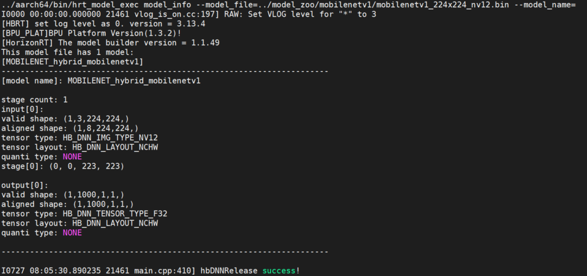
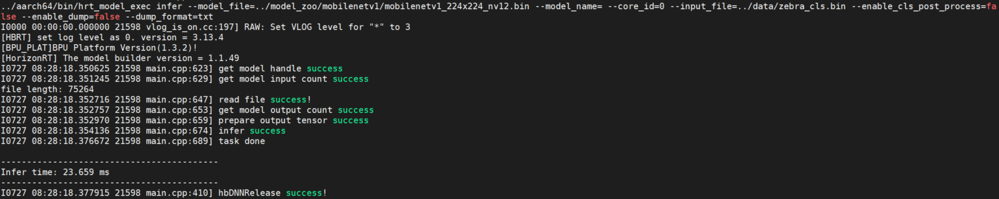

2. Runtime应用开发工具包
小技巧
建议您在阅读本章内容之前先完成以下准备工作：
阅读《地平线J5 AI芯片工具链用户手册》 产品介绍 章节中runtime应用开发的相关内容和 runtime应用开发 章节内容。
运行 《ai_benchmark使用说明》 中相关示例来熟悉runtime应用开发相关示例。
本章内容介绍地平线J5 AI芯片工具链提供的Runtime应用开发工具包中的两款工具 hrt_model_exec 和 hrt_bin_dump。
与前面两章内容中介绍的工具包不同的是，Runtime应用开发工具包是在开发板环境中运行的。
在使用该工具包之前，您需要执行位于J5天工开物发布物（即：horizon_j5_openexplorer）的 ddk/package/board
路径下的安装脚本安装工具包，命令行如下所示：
bash ddk/package/board/install.sh ${board IP}
备注
${board IP} 是指您获取到的J5开发板的IP地址，如：10.100.168.1。
请在执行安装脚本时将此处替换为您的开发板实际IP地址。
安装成功后，工作台打印信息将返回该工具包在您的J5开发板中的安装路径。
然后，分别运行 hrt_model_exec 和 hrt_bin_dump 命令，可验证安装成功。
命令输出如下代码块所示：
备注
以下代码块所示命令行输出可能随工具版本不同有所差异，此处仅为示例。
Usage:
hrt_model_exec [Option...] [Parameter]
[Option] [instruction]
---------------------------------------------------------------------------------------------------------------
-h --help Display this information
-v --version Display this version
[Option] [Parameter]
---------------------------------------------------------------------------------------------------------------
--model_file [string]: Model file paths, separate by comma, each represents one model file path.
--model_name [string]: Model name.
When model_file has one more model and Subcommand is infer or perf,
"model_name" must be specified!
--core_id [int] : core id, 0 for any core, 1 for core 0, 2 for core 1.
--input_file [string]: Input file paths, separate by comma, each represents one input.
The extension of files should be one of [jpg, JPG, jpeg, JPEG, png, PNG, bin, txt]
bin for binary such as image data, nv12 or yuv444 etc.
txt for plain data such as image info.
--enable_cls_post_process [bool] : flag for classfication post process, only for ptq model now.
Subcommand must be infer.
--enable_dump [bool] : flag for dump infer input and output. The default is false. Subcommand must be infer.
--dump_format [string]: output dump format, only support [bin, txt]. The default is bin.
Subcommand must be infer.
--dump_precision [int] : Output dump precision for float32/float64 in txt file. Default is 9 decimal places.
--dump_txt_axis [int] : The txt file of dump is expanded according to the specified axis;
the default is 4, which means there is only one data per line
(for 4-dimensional data); Subcommand must be perf, dump_format must be txt
--profile_path [string]: profile log path, set to get detail information of model execution.
--frame_count [int] : frame count for run loop, default 200, valid when perf_time is 0.
Subcommand must be perf.
--perf_time [int] : minute, perf time for run loop, default 0.
Subcommand must be perf.
--thread_num [int] : thread num for run loop, thread_num range:[1,8],
if thread_num > 8, set thread_num = 8. Subcommand must be perf.
[Examples]
---------------------------------------------------------------------------------------------------------------
hrt_model_exec model_info | hrt_model_exec infer | hrt_model_exec perf
--model_file | --model_file | --model_file
--model_name | --model_name | --model_name
| --core_id | --core_id
| --input_file | --frame_count
| --enable_cls_post_process | --perf_time
| --enable_dump | --thread_num
| --dump_format | --profile_path
| --dump_txt_axis |
| --dump_precision |
Usage:
hrt_bin_dump [Option...] [Parameter]
[Option] [instruction]
---------------------------------------------------------------------------------------------------
-h --help Display this information
-v --version Display this version
[Option] [Parameter]
---------------------------------------------------------------------------------------------------
--model_file [string]: Model file path, model must be debug model.
--conv_mapping_file [string]: conv mapping file path, json file.
--input_file [string]: Input file paths, separate by comma, each represents one input.
The extension of files should be one of [bin, txt].
bin for binary such as image data, nv12 or yuv444 etc.
txt for plain data such as image info.
--conv_dump_path [string]: output path of conv output file
[Examples]
---------------------------------------------------------------------------------------------------
hrt_bin_dump
--model_file
--input_file
--conv_mapping_file
--conv_dump_path
下面两个小节分别介绍两款工具的说用。
2.1. hrt_model_exec 工具
2.1.1. 工具简介
hrt_model_exec 是一个模型执行工具，它在开发板上评测模型的推理性能并获取模型信息。
本工具一方面可以让开发者拿到模型时实际了解模型真实性能；
另一方面也可以帮助开发者了解模型可以做到的速度极限，对于应用调优的目标极限具有指导意义。
如下表所示， hrt_model_exec 工具提供了模型推理 infer、模型性能分析 perf 和查看模型信息 model_info 三个功能。
运行 hrt_model_exec、 hrt_model_exec -h 或 hrt_model_exec --help 获取工具使用详情。
编号 |
子命令 |
说明 |
1 |
|
获取模型信息，如：模型的输入输出信息等。 |
2 |
|
执行模型推理，获取模型推理结果。 |
3 |
|
执行模型性能分析，获取性能分析结果。 |
2.1.2. 参数说明
编号 |
参数 |
类型 |
说明 |
1 |
|
string |
模型文件路径，多个路径可通过逗号分隔。 |
2 |
|
string |
指定模型中某个模型的名称。 |
3 |
|
int |
指定运行核。 |
4 |
|
string |
模型输入信息，多个可通过逗号分隔。 |
5 |
|
bool |
使能分类后处理。 |
6 |
|
bool |
使能dump模型输入和输出。 |
7 |
|
string |
dump模型输入和输出的格式。 |
8 |
|
int |
控制txt格式输出float型数据的小数点位数。 |
9 |
|
int |
控制txt格式输入输出的换行规则。 |
10 |
|
string |
模型性能/调度性能统计数据的保存路径。 |
11 |
|
int |
执行模型运行帧数。 |
12 |
|
int |
执行模型运行时间。 |
13 |
|
int |
指定程序运行线程数。 |
2.1.2.1. model_info 子命令
该参数用于获取模型信息，模型支持范围：ptq和qat模型。该参数与 model_file 一起使用，用于获取模型的详细信息，
信息包括：模型输入输出信息 hbDNNTensorProperties 以及模型的分段信息 stage, 分段信息是指：一张图片可以分多个阶段进行推理，stage信息为[x1, y1, x2, y2]，分别为图片推理的左上角和右下角坐标，目前地平线J5的bayes架构支持这类分段模型的推理，xj3上模型均为1个stage。
不指定 model_name 输出模型中所有模型信息，指定 model_name 则只输出对应模型的信息。
请参考以下示例。
使用示例
单模型
hrt_model_exec model_info --model_file=xxx.bin
多模型（输出所有模型信息）
hrt_model_exec model_info --model_file=xxx.bin,xxx.bin
多模型--pack模型（输出指定模型信息）
hrt_model_exec model_info --model_file=xxx.bin --model_name=xx
2.1.2.2. infer 子命令
该参数用于模型推理。
用户需自定义输入图片，推理运行一帧。
该参数需要与 input_file 一起使用，指定输入图片路径。
工具根据模型信息resize图片，整理模型输入信息。
程序将以单线程运行单帧数据，并输出模型运行的时间。
请参考以下示例：
使用示例
单模型
hrt_model_exec infer --model_file=xxx.bin --input_file=xxx.jpg
多模型
hrt_model_exec infer --model_file=xxx.bin,xxx.bin --model_name=xx --input_file=xxx.jpg
可选参数
参数 |
说明 |
|
指定模型推理核id。 |
|
使能分类后处理，目前只支持ptq分类模型，默认为 |
|
dump模型输出数据，默认 |
|
dump模型输出文件的类型，可选参数为 |
|
dump模型txt格式输出的换行规则；若输出维度为n，则参数范围[0, n]，默认为 |
2.1.2.3. perf 子命令
该参数用于测试模型性能。
该模式下，用户无需输入数据，程序根据模型信息自动构造输入tensor，tensor数据为随机数。
程序默认单线程运行200帧数据，当指定 perf_time 参数时， frame_count 参数失效，程序会执行指定时间后退出。
输出模型运行的latency以及帧率信息。程序每200帧打印一次性能信息，包括：
latency的最大、最小和平均值。如不足200帧，则程序运行结束后打印一次性能信息。
程序最后输出running相关数据，包括：程序线程数、帧数、模型推理总时间、模型推理平均latency以及帧率信息。 请参考以下示例：
使用示例
单模型
hrt_model_exec perf --model_file=xxx.bin
多模型
hrt_model_exec perf --model_file=xxx.bin,xxx.bin --model_name=xx
可选参数
参数 |
说明 |
|---|---|
|
指定推理核id。 |
|
设置 |
|
设置 |
|
设置程序运行线程数，范围[1, 8], 默认值 |
|
统计工具日志产生路径，运行产生profiler.log，分析op耗时和调度耗时 |
2.1.2.4. 多线程Latency数据说明
多线程的目的是为了充分利用BPU资源，多线程共同处理 frame_count 帧数据或执行 perf_time 时间，直至数据处理完成/执行时间结束程序结束。
在多线程 perf 过程中可以执行以下命令，实时获取BPU资源占用率情况。
hrut_somstatus -n 10000 –d 1
输出如下：
root@j5dvb:/# hrut_somstatus -n 10000 –d 1
=====================1=====================
temperature-->
ddr_cv_cam-thermal : 31.1 (C)
soc-thermal : 30.8 (C)
bpu0_r-thermal : 30.1 (C)
ddr0_sram : 30.9 (C)
bpu0_b_top : 29.4 (C)
bpu0_video : 30.2 (C)
ddr0_video : 30.9 (C)
peri : 30.7 (C)
bpu1_cpu-thermal : 30.1 (C)
bpu1_sram : 30.5 (C)
bpu1_top : 29.8 (C)
bpu1_left : 30.1 (C)
bpu0_cam_cv : 30.2 (C)
ddr1_cam : 30.6 (C)
cpu-thermal : 30.7 (C)
cpu_t-thermal : 30.4 (C)
cpu frequency-->
min cur max
cpu0: 24000 1200000 1200000
cpu1: 24000 1200000 1200000
cpu2: 24000 1200000 1200000
cpu3: 24000 1200000 1200000
cpu4: 24000 1200000 1200000
cpu5: 24000 1200000 1200000
cpu6: 24000 1200000 1200000
cpu7: 24000 1200000 1200000
bpu status information---->
min cur max ratio
bpu0: 200000000 1200000000 1200000000 0
bpu1: 200000000 1200000000 1200000000 0
备注
在 perf 模式下，单线程的latency时间表示模型的实测上板性能，
而多线程的latency数据表示的是每个线程的模型单帧处理时间，
相对于单线程的时间要长，但是多线程的总体处理时间减少，其帧率是提升的。
2.1.2.5. 多输入模型说明
infer 子命令的推理功能支持多输入模型的推理。
输入数据支持图片、二进制文件以及文本文件，输入数据用逗号隔开。
模型的输入信息可以通过 model_info 进行查看。
使用示例
hrt_model_exec infer --model_file=xxx.bin --input_file=xxx.jpg,input.txt
2.1.2.6. 输入参数补充说明
重复输入
若重复指定参数输入，则会发生参数覆盖。
例如，获取模型信息时，如果重复指定了两个模型文件，则会取后面指定的参数输入 yyy.bin。
参见以下代码块示例：
hrt_model_exec model_info --model_file=xxx.bin --model_file=yyy.bin
若重复指定输入时，未加命令行参 --model_file，则会取命令行参数后面的值，未加参数的不识别。
例如，下例会忽略 yyy.bin，参数实际取值为 xxx.bin：
hrt_model_exec model_info --model_file=xxx.bin yyy.bin
其他命令行参数的重复输入情况以此类推。
其他参数补充说明
input_file 参数指定图片类型的输入，其文件名后缀必须为 bin / JPG / JPEG / jpg / jpeg 中的一种，
feature输入后缀名必须为 bin / txt 中的一种。
每个输入之间需要用英文字符的逗号隔开 ,，如： xxx.jpg,input.txt。
profile_path 参数用于指定profile日志文件生成的目录。
该参数通过设置环境变量 HB_DNN_PROFILER_LOG_PATH 查看模型运行过程中OP以及任务调度耗时。
一般设置 --profile_path="." 即可，代表在当前目录下生成日志文件，生成的日志文件为profiler.log。
enable_cls_post_process 参数用于使能分类后处理。
子命令为 infer 时配合使用，目前只支持ptq分类模型（即：***.bin）的后处理，如设置为 true 则将会打印分类结果。
参见下图：

2.2. hrt_bin_dump 工具
2.2.1. 工具简介
hrt_bin_dump 是 ptq debug模型（即：***.bin）的layer dump工具，工具的输出文件为二进制文件。
2.2.2. 参数说明
编号 |
参数 |
类型 |
描述 |
说明 |
1 |
|
string |
模型文件路径。 |
必须为debug model。即模型的编译参数 |
2 |
|
string |
输入文件路径。 |
模型的输入文件，支持 |
3 |
|
string |
模型卷积层配置文件。 |
|
4 |
|
string |
工具输出路径。 |
工具的输出路径，该路径应为合法路径。 |
2.2.3. 示例
以MobileNetv1的debug模型为例，创建outputs文件夹，执行以下命令：
./hrt_bin_dump --model_file=./mobilenetv1_hybrid_horizonrt.bin \
--conv_mapping_file=./mobilenetv1_quantized_model_conv_output_map.json \
--conv_dump_path=./outputs \
--input_file=./zebra_cls.bin
运行日志参见以下截图：

在 outputs/ 路径下可以查看输出，参见以下截图：